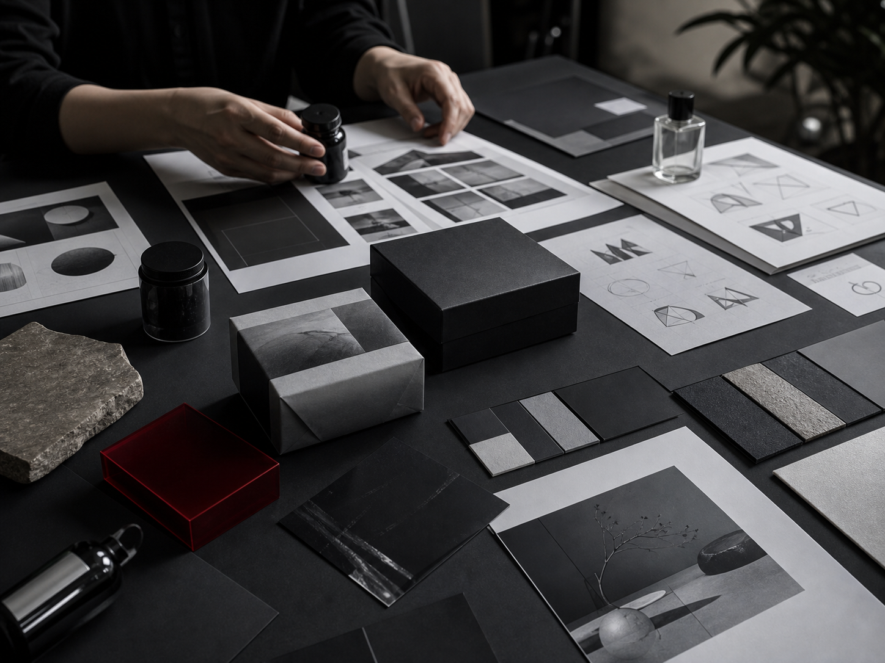

New venture brand direction
We helped clarify a new business concept, define the audience, shape the tone of voice, and build a flexible visual direction for launch.

Brand Systems
These projects typically begin when the business has momentum, but the story, look, offer, or customer touchpoints no longer feel aligned.
We helped clarify a new business concept, define the audience, shape the tone of voice, and build a flexible visual direction for launch.
We connected naming, packaging, photography direction, sales materials, and storefront presentation into one brand experience.
We reorganized the way a company explained its value so that website, decks, campaigns, and sales conversations worked from the same story.